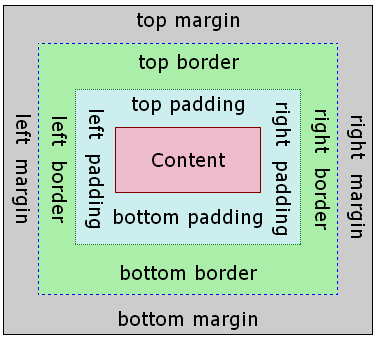

A Guide to Designing Webpages.
CSS stands for Cascading Style Sheets. Please read the base information on CSS available under the CSS tag, or click here.
To truly understand the extent at which CSS can change a web page, visit Zen Garden. It's a website that shows you the same page, and allows you to adjust the CSS of the web page to see how it can completely change the mood, tone, and style of a web page without any edits to the content itself.
The breakdown of a CSS formatting rule (one unit of declaration) is into two parts: selectors, which decide which piece of HTML is affected, and declarations, which decide how that HTML will be altered. Multiple declarations can be made under one selector.
#one {
color:grey;
background-color:blue;
}
In the above code, anything marked with the ID 'one' will have a blue background, and white text. We know it has to be the ID over the 'class' due to the use of '#'. If 'one' was a class instead, it would be preceeded by a '.' instead of a '#'.
Selectors can cover tag, classes, or ID's. One formatting rule can have multiple selectors, to be more efficient with space and avoid repetitive code. This also allows developers to combine the three for specific matches, and combine with <div> and <span> to give more precise control.
Declarations follow a clear-cut structure. First, they state what they are adjusting (ie: color, margin, border), and then a colon. Then, how they are adjusting it (ie: red, 15px, solid). As multiple delcarations can exist in the same formatting rule, they must be seperated with a semi-colon.
| Selector | Pattern |
|---|---|
| p | All <p> |
| .special | <tag class="special"> |
| p.special | All <p class="special"> |
| #box | The only <tag id="box"> |
| #box p | All <p> nested inside the only <tag id="box"> |
| #box > p | All <p> that are direct children of <tag id="box"> |
| #box p.special | All <p class="special"> nested inside the only <tag id="box"> |
| div#box p | All <p> nested inside the only <div id="box"> |
More selector syntax can be found here.
The units CSS supports are varied. Absolute units are calculated independently of the rest of the page, and set at their specific state. They include pixels (px), points (pt), and millimetres (mm). Relative units are calculated against either the browser, or other content on the page. They include percentages (%), ems (em), and exes (ex). Special relative text units are available (small, large, x-large). Combining both can make a design much better.
You may have noticed all the colours used in prior examples have been stated by names. This may lead to the incorrect impression the CSS has limitations on colour. CSS actually supports three different ways to define which colour the developer would like an asset to be. They can state one of the 17 supported colour names, they can define an RGB code with rgb(0,32,234);, or they can state a hex code with #0000ff;. All of these would show the colour stated on the web page.
Pseudo classes and elements also exist: selectors for special parts or statuses of specific elements. Examples include a p:first-letter selector, allowing alteration to the first letter of a paragraph, or the a:hover selector, allowing alteration to links whenever they are hovered over.
The box model is a theoretical theory used in HTML and CSS. The idea is that every piece of content on a webpage is surrounded by a box. There are four key boxes; the content, the padding, the border, and the margin.
The box model allows the programmer to specify borders and spacing around elements on a web page. The content is text or an image, and the padding is the invisible space between the content and the border. Similarly, the border is a solid line (or dashed, etc.) which surrounds the content, and the margin is the space between the border, and adjacent elements. When the size of an element is defined in the CSS of a page, it is the content that is defined. The padding, border, and margin can all be added on to the defined size of the content, in order to separate the content from other elements on the page, or in order to define a border.
Making use of the box model allows for a wider level of customisation to any webpage. The designer can even
alter the distance between the border and the content it surrounds.
Some browsers are not capable of successfully rendering the box model. Internet Explorer 5 & 6 both have issues
displaying a box accurately, but this can be worked around by adding additional code. Internet Explorer 4 has
issues formatting a box correctly, but any workaround attempts will crash the browser. However, these browsers
are not widely used today, and the most common browsers have no problem rendering the box model. The biggest
issue regarding compatibility is the fact that the Internet Explorer suite comes preinstalled on any Windows OS
PC, but most people today simply use it to download a different browser.
The incompatibility between Internet Explorer and the rest of the browsers is over what the base definition of
the box should be. When a box is defined, the W3C specification states that this definition should size the
content alone, whereas in Internet Explorer takes this sizing to include the padding and the border. This makes
a box intended to be quite large significantly smaller, and can lead to layout issues.
The padding is the space between the outside edge of the content, and the inside edge of its box; essentially, the space between the text and the inside of the border.
The border is the outline of a box, and has three sub-properties: width, style, and colour. These are specified by border-width, border-style, and border-color accordingly. However, you can adjust all of these in just one declaration:
#one {
border: 20px solid red
}
The margin is the space around the outside edge of the box, including the border. This allows you to make space between the boxes, and space out your content evenly.
The browser will defaultly use the max width available for a box, but this can be adjusted in CSS to ensure that a box maintains a correct size. To make this more compatible for different sized monitors, modern browsers also allow for min-width and max-width to be assigned, and decided upon based on the page. The same works for height.
The background of an asset is the visible space inside any borders, covering the content and padding. It
can be a colour, or an image ( background-image: url(filelocation); ). When an image is used,
developers can also select the position of the initial image and whether the background repeats, and if so, in
what direction.
If the content of a box is greater than the box's absolute set size, overflow is created. There are three ways to
deal with this:
overflow:visible;
overflow:hidden;
overflow:scroll; / overflow:auto;
Website by Summer Anderson-Cheung // Student 180363450 at Newcastle University School of Computing.